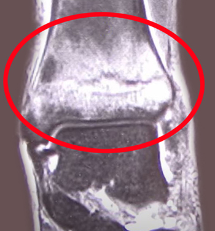

骨挫傷
骨挫傷とは
スポーツによる外傷や交通事故、関節同士がぶつかることなど外部からの衝撃が原因で骨の内部（骨髄）に炎症や内出血が生じた状態です。
大きな力で骨が折れた状態を「完全骨折」、骨折までいかない状態で骨にひびが入った状態を「不完全骨折」といいます。
不完全骨折までいかず、骨の内出血を起こしている状態が骨挫傷です。

症状
患部の強い痛み、腫れ、内出血（あざ）
運動時や患部を押したときの強い圧痛（押すと痛む）
痛みが引かず長く続く
発症しやすい部位
膝関節（大腿骨・脛骨）、足関節（足首）、手首（中手骨）など、衝撃を受けやすく関節を形成する部位
原因
交通事故やスポーツ時の衝突、転倒などの外部からの強い衝撃が原因となります。
診断
骨挫傷は、レントゲンやCTでは骨の異常は発見できないことが多く、MRIで骨の内部の内出血の有無を調べます。
治療
まずは応急処置のRICE療法を徹底的に行います。
RICE療法とは、Rest（安静）、Icing（冷却）、Compression（圧迫）、Elevation（挙上）の頭文字を取った治療法で、捻挫に限らず肉離れや打撲など、外傷一般に使える応急措置です。
慢性期は温めて血行を良くし、状況応じて超音波治療を行います。